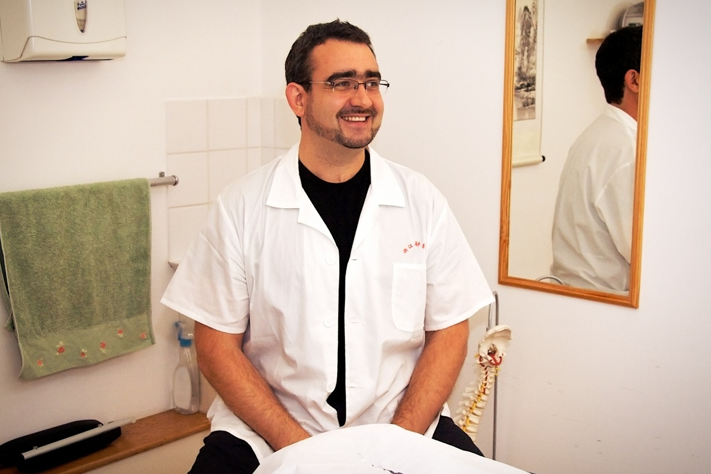

醫道 — the art of medicine
This demo keeps the clinic’s visual identity warm and grounded, then turns the about page into a practical route for choosing who to contact and what to ask.
The current concept avoids publishing unsourced qualifications, outcomes or medical claims. Those details can be restored in a final handover once Yi Dao Clinic confirms the exact wording and source material.
Conny & Zarig Cooper
Conny Cooper
Practitioner profile
This section is designed for a concise, verified practitioner biography: treatment focus, appointment days and professional registrations, once confirmed by the clinic.

Zarig Cooper
Practitioner profile
This matching profile area keeps the page balanced while leaving space for confirmed qualifications, special interests and booking notes.
Practitioners & therapists
The layout below shows how the full team could be presented clearly once the clinic confirms each role, qualification and working day.
Tal Mordechay
Acupuncture
Space for a verified short biography, registration details and appointment guidance.
Wanda Hiller
Acupuncture
Space for a verified short biography, treatment focus and appointment guidance.
Jasmine Yeh
Acupuncture & Chinese Herbal Medicine
Space for a verified short biography, registrations and appointment guidance.
Lilly Jukic
Osteopathy & Cranial Osteopathy
Space for a verified short biography and booking guidance.
Dragos Corcoveanu
Massage
Space for a verified short biography and booking guidance.
Karen Ford
Reflexology
Space for a verified short biography and booking guidance.
Nicole Castellani
Integrative Counsellor & Psychotherapist
Space for a verified short biography and booking guidance.
Samantha Gladden
Homeopathy
Space for a verified short biography and booking guidance.
Current fees, appointment days and practitioner availability should be confirmed directly with the clinic before booking.
Root & Branch College
This area can hold a verified education or training link if the clinic wants to include it in the final copy.
Visit rootandbranchcollege.com →